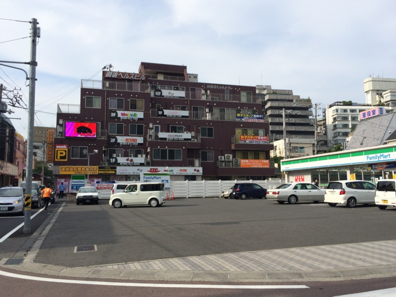
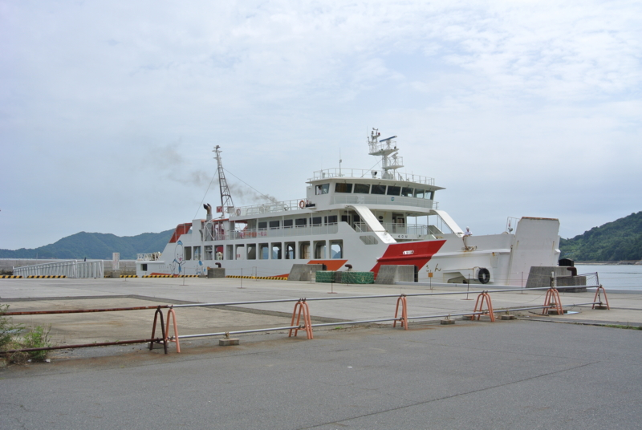

愛媛・松山に移住して1年経ちました。
公開日：

早いもので、東京を出て愛媛・松山に来て1年が経ちました。
当初、松山にきた目論見は――
- 生活費安い ＋ リモートワークで収入は確保できるアテがある
- 空港が近く（松山駅からバスで15分ほど）、LCC も飛んでいるので、東京に出ようと思えばいつでも出られる（7,000円ぐらい）
- 東京への一極集中はよくない。地方に住めるものは地方に住むべきという持論の実践
- 景観・史跡・温泉などが楽しめそう
- それでいて十分な規模があり生活に困らない。クルマがなくても生活できる街に住みたい
ざっとこんな感じでした。ほんとは農業でも何でもよかったのですけど、まぁ、伝手もないし、とりあえず足がかりとしては地方中核都市がいいのかな、と。
事前の調査では、北陸や熊本なども候補にしていたのですが、飛行機の便と、なにより移住に際し助けてくれた方々の存在が決定打でした（とくに J さんには十分恩返しができてなくて、心苦しいデス）。おかげさまで、まだここで生きています。
生活費
家賃が安い（迫真
信頼できる統計かはどうかは自分でチェックしていないのですが、都道府県別 民営賃貸住宅家賃ランキング: 教えて！全国ランキング 2019 〜都道府県ランキング 日本の統計〜 によると都道府県別で民営賃貸住宅の家賃をみた場合、1カ月3.3㎡当たり3,271円（2008年度）。全国最安値です。今住んでいるところは家賃は東京と同じですが、広さは倍以上あります（2DK → 4LDK）。築年数にこだわらなければ、今の広さを保ったまま4万円台ぐらいにまでは下げられるかなーといった感じ（ただ、新しくて手頃な物件がじゃんじゃんあるわけじゃないので、そういうのを求めるひとは家を建てるのを目標にしてくだサイ）。
――とはいえ、そのほかの生活費はあんまり東京と変わらないかなって気もします。
電気代はちょい安め（図は 電気料金を徹底比較！『日本で一番高い電力会社』はいったいどこ？電気料金ランキング - | 電力比較サイト エネチェンジ より引用）、ガスはプロパンなのでお察し。水道代もフツーなのじゃないかな。光熱費は、総じて東京時代とあまり変わっていない感じがします。
野菜など、食料品が激安かというとそういう印象もなし。これは1人暮らし（父は松山に飽きたらしく出稼ぎ中）だからかもしれません。東京はお独り様向けの商品開発が進んでいますが、こちらではあまりそういうのはありません。まぁ、高くはないし、むしろ生協はミカンの種類が充実していて、買い物していて楽しいですが。
ただ、会社帰りに1杯飲んだり、突発的な飲み会に参加したりということが減ったので、その分はお金が貯まりました。松山に来てからは月一のペースで飲み会を開いています。次の ゆるふわ.rb | Doorkeeper の開催を狙っているのですが、いつになるんでしょうか？（笑 美味しいお魚、食べたいなー（松山は周りに比べるとお魚に恵まれていない感じですが、まぁ、比較対象が宇和島だったりするのでｗ フツーに美味しいですよ）。
ほかには……まぁ、困ることはないかな。百貨店もあるし（ずっと前に北海道物産展行ってきたった）、ジュンク堂（6階建て）もあるやで。飲み屋にも困らないし、ロフトもできたしな（ロフト｜ショップ検索 - エミフルMASAKI）。
収入に関しては……退職ブログとか書くと、シャレのわかんない人に怒られて干されたりするので注意した方がいいと思いました。危うく干乾しになるところでしたが、縁を得て、とりあえず糊口をしのげています。
交通

「東京に出やすい」というのは、以前にも2回ほど松山に来たことがあるのでだいたい把握していました。ジェットスターを使えば、1時間半＆7,000円ほどで成田まで行けます。だるやなぎ家の実家は千葉の市川にあるので、羽田じゃなくてもそれほど困らない感じ。最近はピーチの関空便があるので、大阪にも出やすいですね。年末に使ってみましたけど、多少不便な点に我慢すれば、やっぱり安いのは魅力。高速バスが苦手な僕にはありがたい……。
ただし、飛行機の路線はいつなくなってもおかしくないので、別に盤石ということはないです。いつでも飛べるわけじゃないしね。この辺りは不安かなぁ。まぁ、ANA の旅割でも 15,000円 ぐらいなので、大阪より東京に出るよりちょっとお金がかかって時間・天候の制約があるといった感じでしょうか。個人的には十分便利だと思います。
あと、市内中枢部は伊予鉄（路面電車）が便利です。「1年間はクルマ・バイクを買わずに電車で暮らす」というのを自分に課していたのです（今年は買おうかなぁーと思いますが）が、そんなに苦行ではなかったです。電車は好きな方なので、むしろ楽しいぐらい。
欲を言えば、自分ちの近くまで延伸してほしいというのと（おい）、空港まで電車で行けたらいいのになーってことぐらいですかね。ともに計画だけはあるようなので、ほんのり期待しておこうと思います（空港への延伸については、JR 松山駅の高架化と南江戸への延伸が決まっているので、割かし実現度が高そう）。高浜港（広島などへのフェリーの乗り場）へのアクセスがよくないのも改善点ですかね。
あと、少し気になったのが、地元の方がそんなに使っていないというか、あまり評価していない点ですかね。やっぱりクルマ中心になっちゃうみたい。ちんちん電車、とってもいいと思うんだけどな。
環境
最初は目新しい環境も、1年も住めば慣れてしまって当たり前になってしまうものですが、この間“石手寺”に行ってそれが間違いだと思い知らされました。これについてはまた稿を改めたいと思います。なんだあれ……。
まぁ、ああいうよくわかんないものはとりあえず横に置いとくとして。
やっぱり目玉は道後温泉と松山城になるんでしょうかね。個人的には萬翠荘も素敵かな、と思います。夏にはてくてく歩いて、ロシア兵捕虜の墓地にも行ってきました。あまり観光で行くって感じのところではないのですが、たまには足を運んで、歴史を近くに感じるのも大事だと思いますね。湯築城、いまだに行ってないなぁ。あと、サッカーみに行きたいんだけど、誰か一緒に行かん？
――それはともかく。
今でもベランダから見える松山城、大好きです。これだけでも引っ越してきた甲斐あったかなって思いますね。温泉にもたまに行きます。平日の夕方辺りに Twitter から消えていたら、温泉に浸かってるかもしれません。
キャッチフレーズの“文学の街”ってのはそれほど感じませんが（笑）、住んでて飽きないとは思います（父は飽きたようなので、そこら辺は個人差だと思いますケド）。
期待したほどではなかった点
JR 四国……。なんてデキない子なんだ……。おかげで JR 松山駅が息をしていないぞ！！ 高速バスを走らせるのもいいけど、本業にも投資してほしいやで。
あと、船がもうちょっと便利だったらなーと思いました。松山には三津という港（近い、古い）と高浜（観光港、新しい、遠い）という二つの港があるのですが、高浜は不便かも。広島は対岸だから船で余裕だぜと思っていたのですが、それほどでもなかった感じ。でも、今年こそは行ってみたいなと思います。

三津から山口の周防大島にわたって陸奥記念館に行ってきたのは割かし楽しかったですしね。
困った点
やばい、1年間ほとんど女の子としゃべらなかった。もともと女の子のいるところにふらふら出かけるタイプではないのに、居心地のいいところに引っこんでしまったからなおさら。東京でおしゃれな女の子がいっぱい歩いているのを見ると、「すっげぇ、都会だ！」とちょっとテンション上がっちゃうので、もはや病膏肓に入りまくりだと思います。
――都会に出た時は、変なことをしないようにすごく気を付けています。
まとめ
言っちゃ悪いけど、高知よりいいんじゃないかなぁ（ごめんなさい*1
松山の魅力とは、を改めて問われると難しいのですが、個人的には“雑多な繁華街からちょびっとだけ離れたところにある、古びて味わいのあるエリア”って感じでしょうか。確かに地方なんだけど、中央から隔離されすぎていないのがいいと思います。
思えば、自分がいま住んでいる“山越”も、市内電車の環状線からちょっとだけ離れた静かなところ。そういう場所が自分の性に合っているのかもしれません。とくに不便もなく、気が向いたときに大街道・銀天街（松山では割と栄えているところです）に飲みに出たり、東京や大阪に遊びに行ったりしています。今年の目標は広島や大分に船で渡ることですかねー。最近ちょっと神社が好きになっているので、厳島や宇佐に行きたいです。
ちょっと早いけど告知……今年もプログラミング生放送＠愛媛・松山が開催されるようです！ - だるろぐ とかもやりますんで、松山に興味のある方はぜひ一度見に来てください！ 道後ヘルスビルはまだ行ったことないので案内できないですが、在住1年目の駆け出しマツヤマンでも、割とメジャーなところなら案内できるかと思います。
*1:日曜の朝市と、ひろめ市場は高知が羨ましいと感じたことだけは付記しておきます